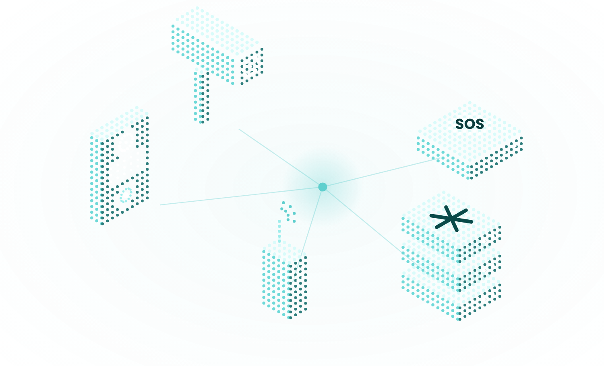

The SIP server
built for the cloud.
A lightweight SIP proxy, location server, and registrar.

connect camera networks build a scaip network wire up intercoms bridge radio over ip scale your pbxGitHub stars
Docker pulls
releases shipped
building since
The engine behind Fonoster.
Every call on Fonoster Cloud is signaled by Routr.
Fonoster builds AI that answers the phone. Every call goes through Routr.
Scales your media servers
Sits in front of Asterisk and FreeSWITCH and spreads calls across them. Not a replacement.
- Carriers and CPaaS platforms
- Office and home phone systems
- Intercom and paging networks
- Asterisk and FreeSWITCH clusters
Small services. One SIP server.
Small services over gRPC. Replace or scale any of them.
Media servers
CarriersPhones · Media servers · Carriers
WS · WSSUDP · TCP · TLS · WS · WSS
req => truematchFunc: req => true
Metrics · CDRsRTPRelay · Auth · Metrics
one you writeConnect, or one you write
Your SIP network, as resources.
The built-in Processor for SIP Connect 1.1. Describe your network as resources; Routr does the routing.
Learn more about ConnectapiVersion: v2beta1kind: Numberref: number-01metadata: name: "(910) 343-4434" geoInfo: city: Durham, NC country: USAspec: trunkRef: trunk-01 location: telUrl: tel:+19103434434 aorLink: sip:conference@sip.local sessionAffinityHeader: X-Room-Id # calls to this number land on one media serverapiVersion: v2beta1kind: Numberref: number-01metadata: name: "(910) 343-4434"spec: trunkRef: trunk-01 location: telUrl: tel:+19103434434 aorLink: sip:conf@sip.local sessionAffinityHeader: X-Room-IdStateful at the edge.
Stateless everywhere else.
Only EdgePorts hold state. The Location Service knows which EdgePort each endpoint is on, so a call can land on any of them and still arrive.
Across EdgePorts
Any EdgePort takes any call and hands it to the one that holds the target.
Across media servers
A Peer groups Asterisk or FreeSWITCH behind one address: round-robin, least-sessions, session affinity.
Across services
Stateless replicas behind a Kubernetes service. Location shared on Redis.
No single point of failure.
Every service is its own pod. Lose an EdgePort, the others keep taking calls. Lose a Processor, the Dispatcher routes around it.
Calls keep flowing.
Extend it in any language.
Processors and Middlewares are gRPC services. Write one in Node, Go, or Java and swap it in.
Build a Processorimport Processor, { Response } from "@routr/processor" const processor = new Processor({ bindAddr: "0.0.0.0:51904", name: "echo" }) processor.listen((req, res) => { // every INVITE, REGISTER, and BYE lands here logger.verbose(req.message.method) res.sendOk()})import Processor from "@routr/processor" new Processor({ bindAddr: ":51904" }) .listen((req, res) => { // INVITE, REGISTER, BYE… logger.verbose(req.method) res.sendOk() })How we can help.
Need help with training, deployment or support? Work with the team that builds Routr.
Built in the open.
MIT licensed, built on GitHub. Questions and ideas go to Discussions and Discord.
Routr's architecture and design is fantastic. A breath of fresh air. Being Docker and Kubernetes ready is a huge win over a more traditional SIP server setup.
I came across Routr, which seems to be the one and only cloud-first Kubernetes-ready SIP server on the planet!
I think this project has a great promise to become a transformative technology.